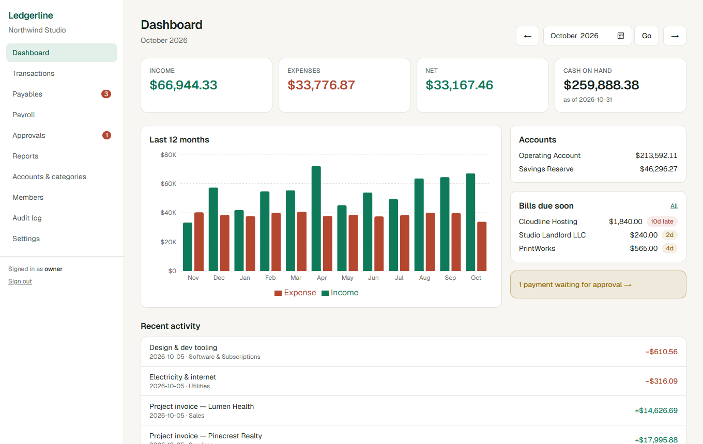
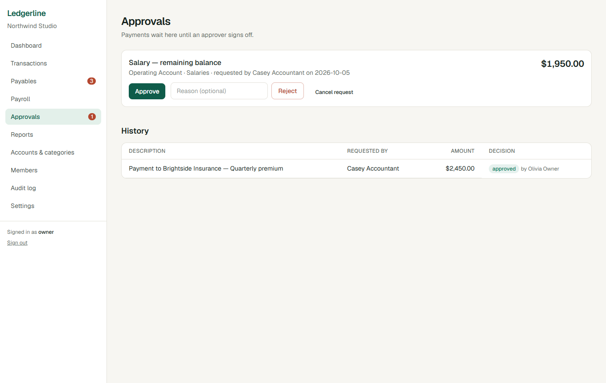
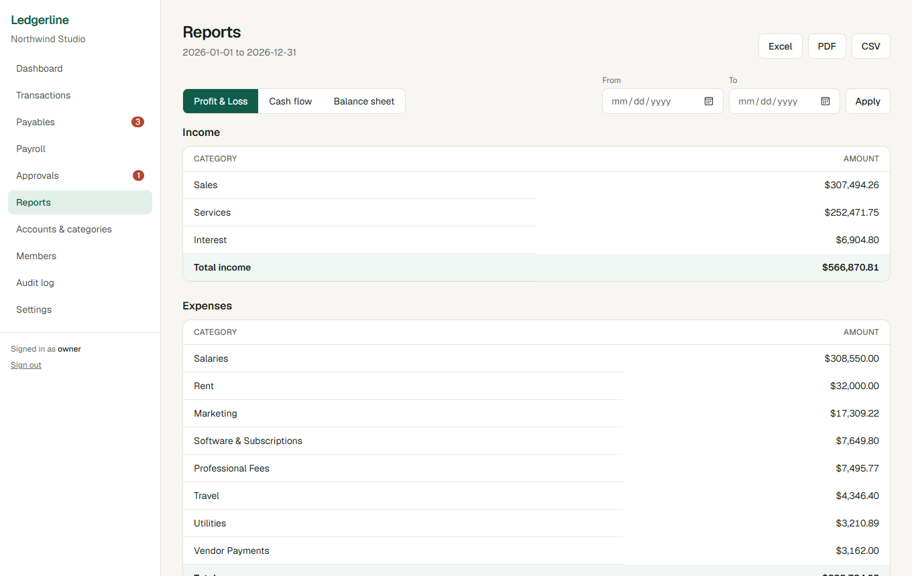

Shamiur Rahman
About
I'm a Biomedical Engineer (BUET) who co-founded an education company in 2019 and now runs it: five business units, 200+ people and 1M+ students. I am the person who finds the bottleneck, builds the tool, and rolls it out to the team that has to use it.
I'm looking for AI automation, operations and forward-deployed engineering work, including remote roles with international teams.
Systems I built and run
Accounting system
Tracks 600–700 transactions a month across two companies. Built with Claude Code to replace commercial software that costs BDT 17,000–20,000 per month, and hosted for free.
HR activity app
Tracks employee activity across a 200+ person organisation.
hulkenstein.study
Free web apps for students, used regularly by 10,000–20,000 of them. Two I'm proud of:
The internal systems hold company data, so they are not shown here. The projects below recreate the same ideas with synthetic data.
Demo projects (synthetic data)
Ledgerline: multi-tenant accounting
A public rebuild of the accounting tool I run for my own company, generalised so any company can sign up without ever seeing another company's books. Bank accounts, transactions, payables, payroll, payment approvals and audit-ready reports.



- Tenant isolation is enforced in Postgres with row-level security, not in app code, and proven by automated tests.
- Payments need approval from a second person, run as one atomic database function. Overpaying a bill is blocked even under concurrent payments.
- Append-only audit log written by the database; exports to Excel, PDF and CSV.
- 77 database assertions, 39 unit tests and 3 end-to-end flows, all run in CI. The README lists the trade-offs and what is not built yet.
- Next.js, TypeScript, Supabase (Postgres), Playwright. Demo data is fictional.
Invoice Intake
Extracts structured data from invoice PDFs. Clean results are auto-approved; doubtful ones go to a human review queue.
- Review rules do not trust the model's confidence alone: they also check that line items sum to the subtotal and subtotal plus tax equals the total.
- Tested on 70 synthetic invoices, including image-only scans. On the 20-invoice hard set, the baseline extractor failed and every document was routed to review, with none wrongly approved.
- Python, Claude API (tool use), Streamlit, 8 automated tests.
Mock ERP MCP Server
Lets Claude operate a fictional company's HR and finance system in plain language, safely.
- Role-based tool access, deny by default; salary hidden from unauthorised roles.
- Destructive actions need explicit confirmation; large transactions need admin approval.
- Every call, including denials, is written to an audit log.
- Python, Model Context Protocol, SQLite, 14 automated tests (including end-to-end tests over the real MCP protocol).
Study Assistant
Answers anatomy questions only from a set of notes, cites the exact section, and refuses when the notes don't cover the question.
- BM25 retrieval written from scratch, with an optional Claude mode that must cite sources.
- 48 labelled questions, tuned on one half and measured on a held-out half: 88% on the held-out set, with failures documented.
- Python, 11 automated tests.
AI reliability and evaluation toolkit
Eight small, tested projects on making AI systems trustworthy in a business. All use synthetic data; model behaviour is simulated except in the fine-tuning project, and each README says exactly what was and was not measured.
LLM Regression Guard
Tests an AI feature against known-good cases whenever a prompt or model changes, and fails the build on a real quality drop.
- A paired statistical test separates noise from regressions: in a simulation, 0 of 200 unchanged runs raised a false alarm, against 20 of 200 without it.
- Slack alert, Markdown report and GitHub Action included. 51 tests. The model is a simulator.
LLM Gateway
Routes each request to the cheapest capable model, enforces per-team rate limits and budgets, falls back when a provider fails, and logs everything.
- Simulated demo of 600 requests: 66% cheaper than always using the largest model (including the cost of validating the routing), 39 fallbacks, budget stops working. Simulated providers.
- Circuit breaker, token buckets, observability report, HTTP server. 30 tests.
AI Pipeline Forensics
Traces every step of a multi-step AI pipeline, finds the true cause of a bad answer, and mines production logs into a growing evaluation set.
- Counterfactual replay found the root cause in 56 of 56 simulated failures; picking the first bad step got 40 of 56, and 8 of 24 on cases built to fool it.
- Log miner recovers about 85-90% of planted failures. 33 tests. Synthetic data.
Hybrid RAG
Keyword and vector search over 24 fictional company documents, with citation verification and refusal.
- Measured honestly on a held-out set: hybrid search did not beat the better single method here, and the README explains where and why.
- Three chunking strategies compared. 52 tests.
Text-to-SQL Guard
Turns plain-English questions into SQL, blocks anything unsafe, and attaches a confidence score or abstains.
- 46 of 46 malicious queries blocked and 0 of 35 valid ones blocked; 19 write attempts sent past the parser were all rejected by a read-only connection.
- Confidence results come from a scripted model and are labelled as such. 113 tests.
Prompt Lab
Versioned prompts, A/B tests with sound statistics, and gradual rollouts with automatic rollback.
- Simulation shows naive peeking at results gives a 19% false-positive rate against 5% for a single look; the sequential test keeps it near 2%.
- Healthy rollouts reach 100%; degraded prompts are rolled back at 1-5% in 50 of 50 simulated runs. 71 tests.
Docs Drift Guard
A GitHub Action that finds documentation made stale by code changes, fixes the mechanical cases and flags the rest for a human.
- On 16 held-out scenarios: 21 of 22 stale sections found, 2 false alarms, 11 of 11 automatic fixes exact. Built on one small sample library.
- 144 tests.
LoRA Fine-Tuning Pipeline
A reproducible pipeline: build a domain dataset, fine-tune a small open model with LoRA, compare it honestly with the base model, and package the result.
- Real run on a CPU with a 135M-parameter model: test F1 rose from 0.234 to 0.349 (n=18, 95% interval +0.056 to +0.186). The README says the gain is mostly answer style, not new knowledge.
- 31 tests. Toy scale.
Source code: Ledgerline · invoice-intake · mcp-mock-erp · study-assistant · all repos at github.com/Shamiur777
Experience
Co-founder & Managing Director, HulkenStein Ltd.
Run operations, strategy and finance for five business units (Edge Course, QNA Publication, QZ Test, Prep Store and related ventures), with annual revenue of BDT 40–50 million. Also CFO (since Apr 2020) and CEO of QNA Publication (since Oct 2019). Recognised by Rokomari Best Seller Awards, HolonIQ South Asia EdTech 100, South Asian Business Excellence Awards and National Tech Awards.
Co-founder & Managing Director, Invext International Ltd.
Import/export venture, at an early stage.
Education
BSc, Biomedical Engineering, Bangladesh University of Engineering and Technology (BUET). Thesis: Burnflow, an app that automates TBSA and fluid resuscitation calculations for burn patients in resource-limited settings.